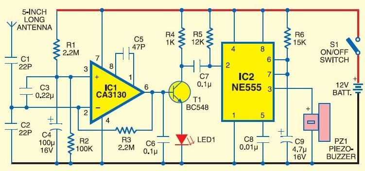

Mobile Signal Detector
A circuit that detects 2G/3G mobile transmission during calls or internet use and alerts the teacher with a warning alarm.
A curated selection of IoT, AI, automation and web projects — click "View details" to learn more.
Projects include embedded systems, ML prototypes, automation dashboards and production-ready web apps.
A circuit that detects 2G/3G mobile transmission during calls or internet use and alerts the teacher with a warning alarm.
A Python machine learning model that recognizes handwritten digits and converts them into digital format.
A homemade wireless audio system using the TPA3110 amplifier for powerful and clear sound output.

An IoT-based system that detects road accidents and automatically sends SMS alerts with GPS location to emergency contacts.

A chatbot deployed using cloud computing platforms like AWS and Azure to provide scalable and automated responses.